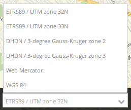
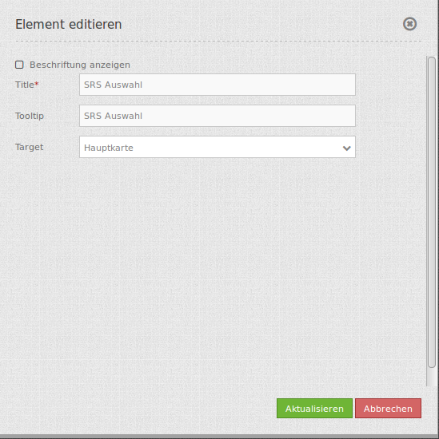

Spatial Reference System Selector (SRS Selector) (Auswahl des räumlichen Referenzsystems)¶
Nach der Auswahl eines räumlichen Referenzsystems (SRS) ändert sich das räumliche Referenzsystem in der Karte. Beachten Sie: Die Selektbox bietet nur die SRS an, die für das Kartenelement definiert wurden.
{kind=link}
Konfiguration¶
{kind=link}
- Title: Titel des Elements. Dieser wird in der Layouts Liste angezeigt und ermöglicht, mehrere Button-Elemente voneinander zu unterscheiden. Der Titel wird außerdem neben dem Button angezeigt, wenn “Beschriftung anzeigen” aktiviert ist.
- Tooltip: Text, der angezeigt wird, wenn der Mauszeiger eine längere Zeit über dem Element verweilt.
- Target: ID des Kartenelements, auf das sich das Element bezieht.
YAML-Definition:¶
tooltip: 'SRS Selector' # Text des Tooltips
label: false # false/true, um die SRS Auswahl zu beschriften. Der Standardwert ist false.
target: ~ # ID des Kartenelements
Class, Widget & Style¶
- Class: Mapbender\CoreBundle\Element\SrsSelector
- Widget: mapbender.element.srsselector.js
- Style: mapbender.elements.css
HTTP Callbacks¶
Keine.
JavaScript API¶
showHidde¶
<>
selectSrs¶
<>
getSelectedSrs¶
<>
isSrsSupported¶
<>
isSrsEnabled¶
<>
disableSrs¶
<>
enableSrs¶
<>
enableOnlySrs¶
<>
getFullSrsObj¶
<>
enableAllSrs¶
<>
disableAllSrs¶
<>
getInnerJoinSrs¶
<>
getInnerJoinArrays¶
<>
JavaScript Signals¶
Keine.